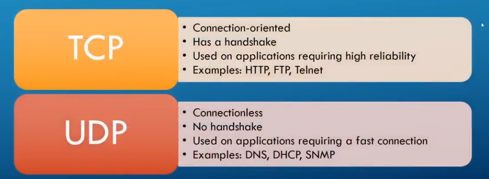

most scanning : tcp
(but incorrect to not scan udp as well (some tools only work on udp))
Tcp
- connection oriented
- has a 3 way handshake
- used on applications requiring high liability
- ex : http, ftp, telnet (anything you need connection)
Udp
- connection less
- no handshake
- used on application requiring fast connection
- ex : dns, dhcp, snmp (don't need high liability for these protocols, just fast connection)
